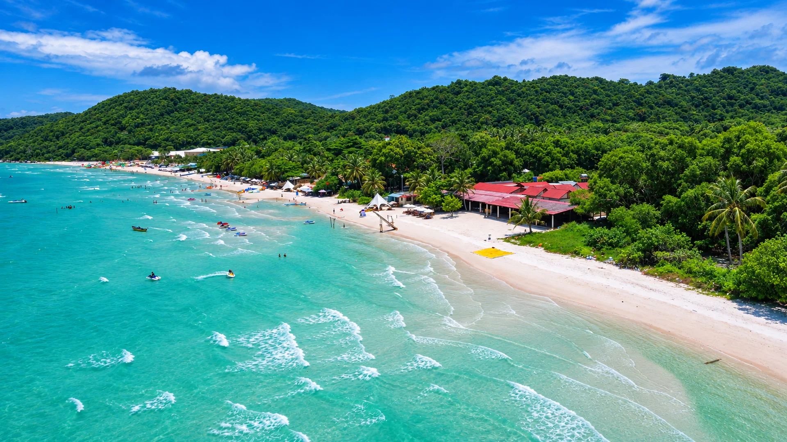

Где лучше остановиться
.webp)
Лонг-Бич, Онг-Ланг, Кхем или район Сансет-Тауна? У каждого места свои особенности: пляжи, инфраструктура, расстояния и атмосфера.
Разберёмся, какой район подойдёт именно вам.

Расскажу, где лучше остановиться, какие пляжи стоит посмотреть и что важно знать до поездки.
Прежде чем выбирать отель, стоит разобраться в трёх вещах: где вы хотите жить, как планируете проводить дни и сколько времени готовы тратить на дорогу.
Лонг-Бич, Онг-Ланг, Кхем или район Сансет-Тауна? У каждого места свои особенности: пляжи, инфраструктура, расстояния и атмосфера.
Разберёмся, какой район подойдёт именно вам.
.webp)
Канатная дорога над морем, острова Антхой, сафари-парк, ночные рынки и небольшие рыбацкие деревни.
Покажу, что действительно стоит включить в маршрут.
.webp)
Когда лучше ехать, как добраться из аэропорта, чем передвигаться по острову и какие расходы предусмотреть помимо проживания.
Соберём всё важное до поездки без лишней суеты.
БЕСПЛАТНЫЙ МИНИ-ГИД
Короткий путеводитель по районам, пляжам и главным вопросам перед первой поездкой.

.webp)
Когда хочется заранее понять маршрут и не тратить время на месте.
.webp) МИНИ-ГАЙД · PDF
МИНИ-ГАЙД · PDFКак построить день и что учесть перед посещением парка.
МИНИ-ГАЙД · PDFКанатная дорога, остров и отдых: как распределить время.
Большой путеводитель — для всей поездки. Короткие маршруты — для отдельных дней.
Поможет выбрать район и пляж, продумать дни и подготовиться к самостоятельной поездке.
Помогу выбрать подходящее направление, формат путешествия и насыщенность маршрута во Вьетнаме с учётом ваших интересов, времени и бюджета. Расскажу о лучших местах, сезоне, особенностях отдыха и подберу маршрут, который подойдёт именно вам.
Обсудить персональный маршрут.webp)

.webp)
.webp)
.webp)
Разбираю отели и направления, делюсь наблюдениями из поездок и полезными деталями.
Что проверить кроме красивых фотографий и цены.
Как выбрать место для отдыха и распределить дни.
Пляж, дорога, окружение и важные нюансы номера.